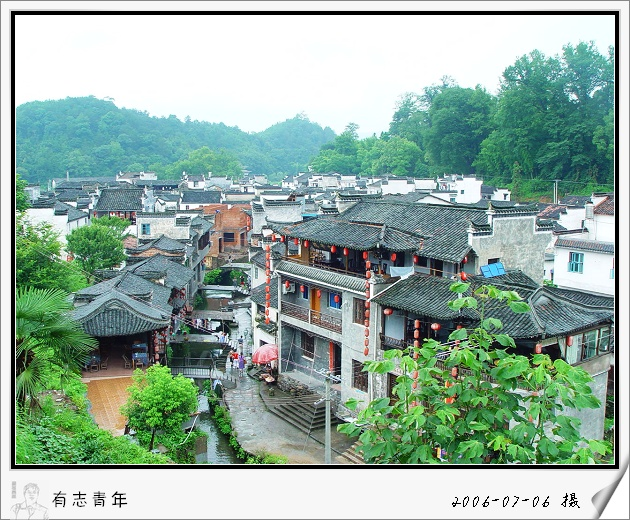
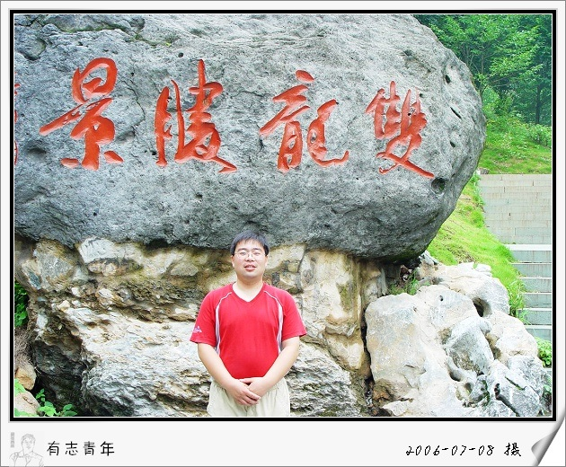

7月江西之行
#1 7月江西之行 作者：有志青年 发表时间：2006-12-5 15:13:31
7月参加了江西三清山、婺源、浙江金华双龙洞一线的旅游，由于天气是在太恶劣，照相机根本就拿不出来呀，现整理了部分发上来。
第一站，三清山：
从半山腰到三清山顶坐缆车是最方便的，和黄山想来差不多，登山的过程仅仅停留在头脑的清静而已吧，上山的景色很是一般。
当夜住在山上的旅馆里，夜里雷雨交加，电都停掉了，闪电就在眼前，煞是可怕。
这两张照片是上山之后当天下午拍摄的，天气还不错，就是光线已经不够充足了。
三清山绝对是美的，山上的游览均在栈道上走，没有登山的劳累，若不是下雨，风景一定很是迷人
雨下得已经很难看清了。
第二站，婺源李坑

李坑的美对于住在乡下的我来说，真感觉不出来。
小时候的家，不也是如此？现在轰隆隆的厂房让农村没有了宁静。
徽派建筑，呵呵，天井好小。

从山上看李坑，旧房、翻新房、新房，夹杂在一起，怎一个“乱”字可解。
第三站，婺源彩虹桥
这就是潘东子那部电影拍摄的地方
补充一下就是《闪闪的红星》
第四站，浙江双龙洞

双龙洞内均是五颜六色的灯打出的绚丽效果，拍了没有意义，就门口留一张吧。
最后，渡江
在长江的轮渡上拍摄的在建的苏通大桥

以后到上海苏州就快多了。
#2 Re:7月江西之行 作者：星月族 发表时间：2010-1-5 17:16:34
青山碧水黑胡茬